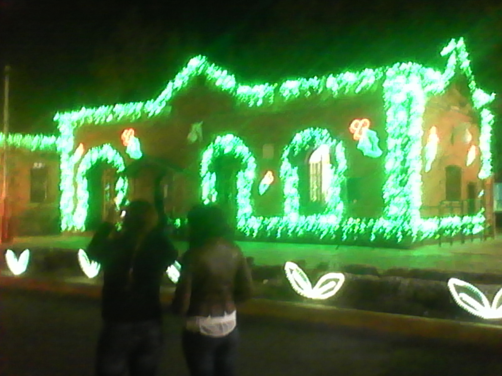
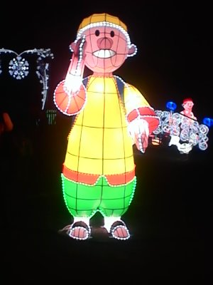
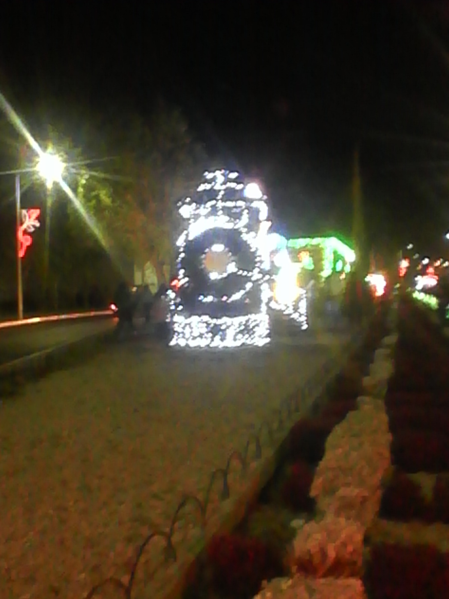
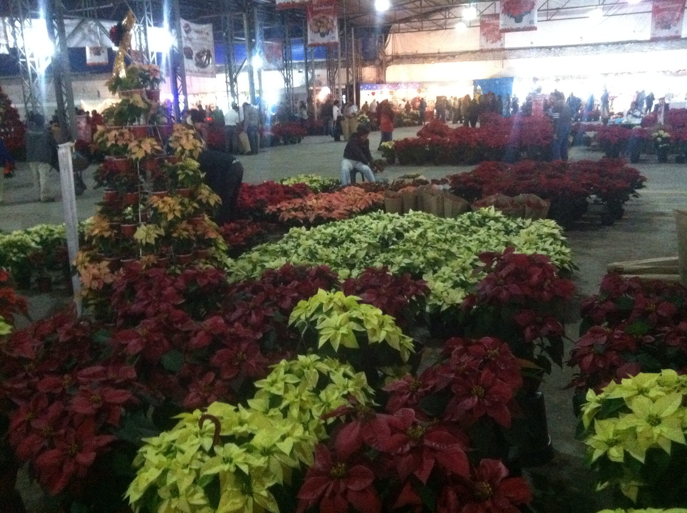

Mapa

Atlixco, Pue.- La noche de este martes, ante miles de familias y un espectáculo de pirotecnia, el alcalde de Atlixco, José Luis Galeazzi Berra, inauguró la Cuarta Edición de la Villa Iluminada, que concluirá el próximo 6 de enero de 2015.
En esta ocasión, a través de 3 mil figuras nuevas y durante 43 días, todos los visitantes podrán disfrutar de la belleza arquitectónica de la ciudad de Atlixco, que se embellece con luces coloridas de variantes tonos y escenas alusivas a la época decembrina y la identidad atlixquense. Posterior al encendido, hubo un espectáculo de nieve en la calle Constitución, que miles de pequeños, con sus familias, disfrutaron al máximo. Villa Iluminada espera la llegada de entre 450 a 500 mil visitantes, lo cual permitirá tener una derrama económica de 55 a 60 millones de pesos, pues habrá poco más de 100 eventos culturales y artísticos, con la participación de 30 grupos provenientes de países como Guatemala, Colombia, España, Perú, Irlanda, Libia, Chile, Kenia e Italia, así como de México y la región.
Villa iluminada nace para integrar a la familia mexicana en un ambiente de luz y color, enmarcada bajo la tranquilidad de la ciudad. Esta fiesta es digna de compartirla con todos los visitantes. Creada por manos atlixquenses de mujeres, hombres y jóvenes, que con pasión han trabajado para crear esta magia y así generar el sustento para sus familias. Este proyecto tiene el objetivo de preservar nuestra cultura y tradiciones fomentando la convivencia de paz y amor.



El recorrido del espectáculo iniciará en la Calle Hidalgo, bajando hacia el zócalo de Atlixco, pasa por el callejón Constitución y sigue por la calle 4 norte, frente al exconvento de El Carmen, llegará a calle Nicolás Bravo, después al boulevar Ferrocarriles y finalizará en el Parque Revolución.
Como cada año se llevará a cabo la tradicional Feria de la Noche Buena. Asiste con toda tu familia y conoce la gran variedad de flores que se expondrán este año.
Entre las que destacan, la Noche Buena tradicional de color rojo, la marmoleada, la blanca, el color salmón y la de color vino.
También, dentro de Villa Iluminada se va a presentar la Feria de la Nochebuena, del 28 de noviembre al 7 de diciembre.
